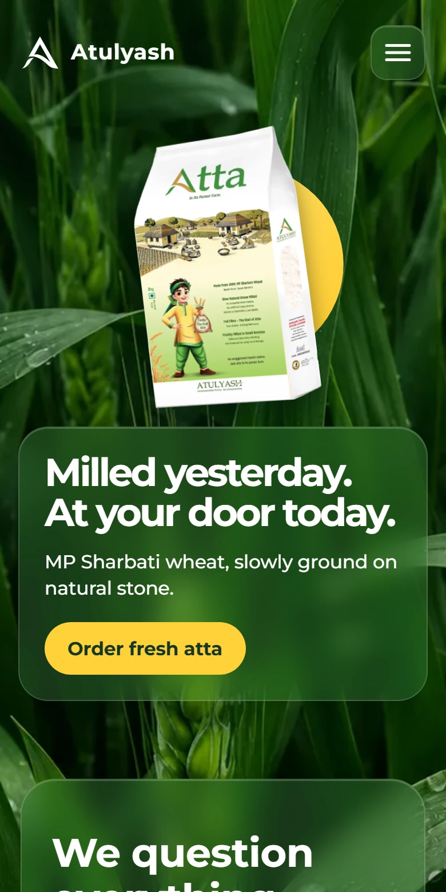
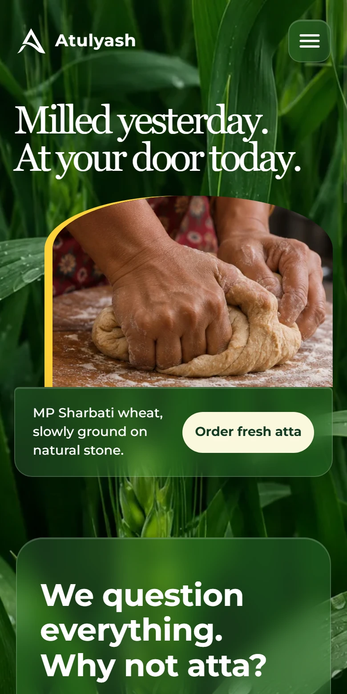
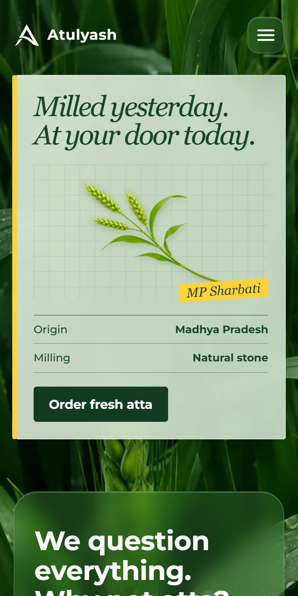
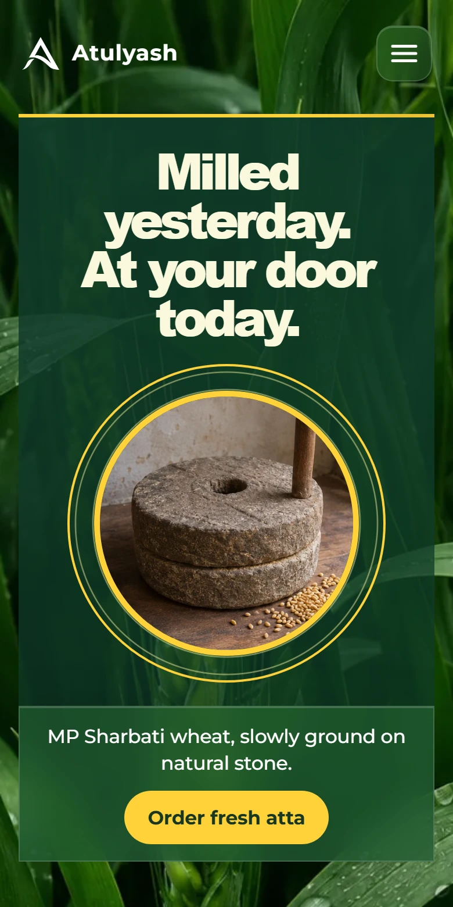
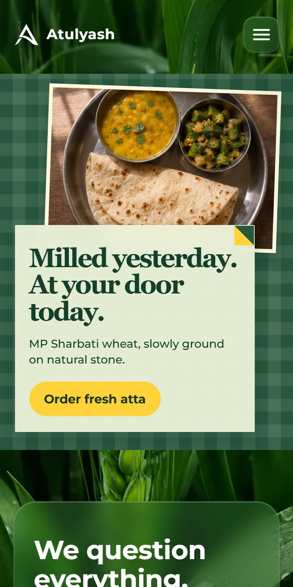

Glass Field, five ways.
Five variations on Glass Field, with a touch of Golden Kitchen. Tap a preview to explore the full page.
-

1. First Light
A pack portrait framed by a rising yellow sun and a floating glass caption.
-

2. Kitchen Window
An arched kitchen photograph between a serif masthead and a glass sill.
-

3. Harvest Notes
A botanical field sheet with an oversized wheat specimen and a ruled ledger.
-

4. Millstone
A graphic mill poster with bold type and concentric grinding rings.
-

5. At the Table
An overhead lunch photograph with a folded, translucent menu on green gingham.